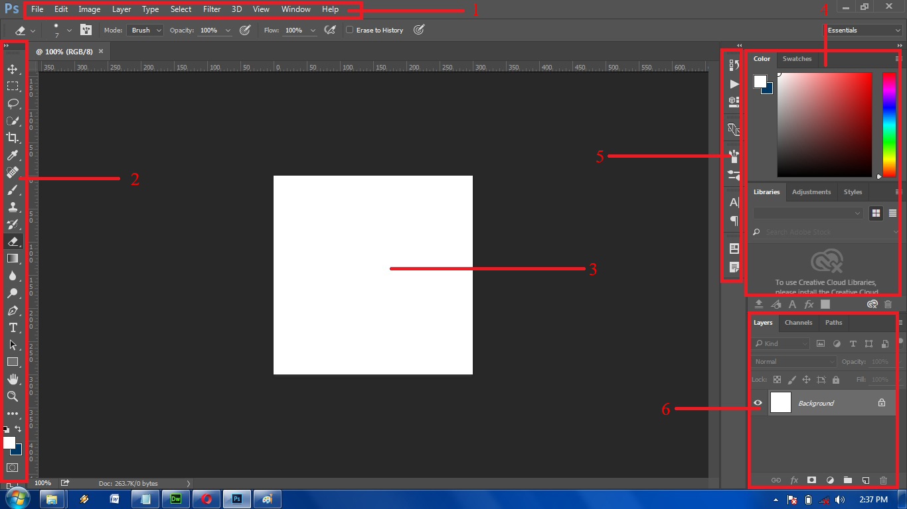

Sebelum anda membaca artikel ini siapin dulu dong kopi sama rokoknya bagi yang suka merokok. Pasti agan-agan yang belum tahu betul tentang Photoshop kalian tentunya sudah mencoba ngedit asal-asalan di photosho, nah sebaiknya anda pelajari dahulu dasarnya dari software ini. Warning!! saat membaca harus fokus dan jangan mikirin cewe agan yang cantik itu haha :v, artikel ini juga bisa ngobatin yang galau lho. hehe :D
yuk ah langsung saja pada pengenalan area potoshop.
ScreenShot Tampilan Photoshop
1. Command bars
Command bars adalah jendela yang kita pergunakan untuk memproses pengerjaan objek
2. Tool Palette
Tool Palette adalah tempat dari seluruh peralatanyang dipakai dalam pengolaan objek, mulai dari tanda panah hingga mengubah warna.
3. Work Space
Work Space adalah tempat objek atau gambar yang akan kita olah.
4. Color
Color adalah jemdela yang mempermudah kita untuk mengubah dan memproses warna dengan mudah
5. Tab Group
Tab Group adalah jendela yang mempermudah untuk menampilkan menu seperti history, character dll. Bisa disetting dengan yang kita inginkan.
6.Layer
Layer adalah jendela yang harus kita pahami, sebab sebagian besar tips dan trik berada di jendela ini.
News
Software Pada Era Stabil
Pada Era Stabil penggunaan komputer sudah banyak, tidak hanya oleh kalangan peneliti dan akademi saja, tetapi juga oleh kalangan industri/perusahaan. perusahaan perangkat lunak bermunculan dan sebuah perangkat lunak dapat menjalankan beberapa fungsi, perangkat lunak mulai bergeser menjadi sebuah produk. Baris-baris perintah perangkat lunak yang dijalankan oleh komputer bukan lagi satu-satu, tetapi sudah banyak seperti proses yang dilakukan secara serempak (multitasking). Sebuah perangkat lunak mampu menyelesaikan banyak pengguna (multi user) secara cepat atau langsung (real time). Pada era ini sudah dikenal sistem basis data, yang memisahkan antara program (pemroses) dengan data (yang diproses).